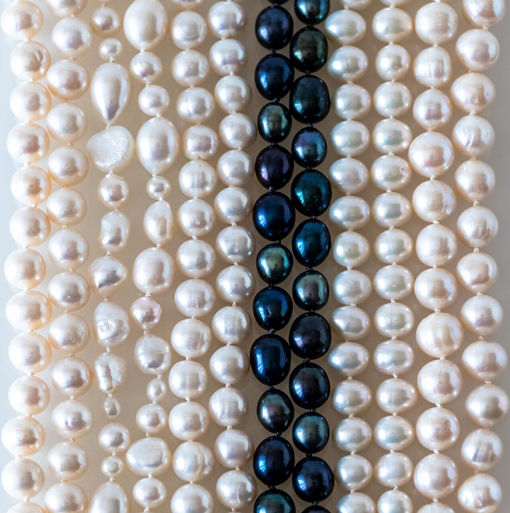

Four times the estimate: pearls run the table at Bonhams
Every one of the top ten lots at Bonhams' July 8 London jewels sale beat its high estimate — led by a David Morris pearl and diamond necklace at $54,894 and a natural pearl strand that made four times its number.
By The Saleroom Desk

What changed
The June auction story was blue diamonds clearing at one hundred percent; July's first London data point belongs to an older material entirely.
What it means
- A four-times-estimate natural pearl strand is not an anomaly; it is a scarcity signal from the one gem category with no lab-grown shadow, no new supply, and a century of attic inventory slowly running out. Estate departments should be re-papering their pearl estimates upward before consignors read this sale, and retailers holding fine natural pearls should re-check their insurance schedules.
- The blue-diamond decade may yet have a white-pearl chapter.
Key figures
| top lots beat high estimate | 10/10 |
|---|---|
| David Morris pearls, top lot ($54,894) | £40,960 |
| natural pearl strand vs estimate | 4× |
| 1930s strap bracelet · est £20,000 | £38,400 |
Source: Bonhams London, July 8
Every one of the top ten cleared — and pearls led
At Bonhams' Fine Jewellery sale on July 8, the top ten lots all surpassed their high estimates, per Rapaport's report — and the sheet was led not by a signed diamond but by pearls.
A David Morris necklace of three cultured-pearl rows with diamond rondelle spacers, pavé flowers and 22.25 carats of interlocking diamond hoops made GBP 40,960, or $54,894, past its GBP 35,000 high estimate.
Bonhams' top table · price realized, GBP
Source: Bonhams London, July 8
Four times the number is a flare gun, not a fluke
The sharper result sat one line down. A natural pearl necklace with a diamond clasp realized GBP 39,680 — roughly four times its high estimate — the kind of multiple that in the pearl trade functions as a flare gun.
Natural, un-nucleated pearls are the rarest commodity in the case, effectively unrepeatable since the oyster beds industrialized, and their price behavior at auction has been quietly strengthening for two years while the trade's attention stayed on colored diamonds.
The rest of the top table told the estimate-beating story in period pieces: a 1930s diamond strap bracelet at GBP 38,400 against a GBP 20,000 high estimate, a diamond fringe necklace carrying some 54.10 carats at GBP 38,400 versus GBP 25,000, and a three-stone diamond ring that made GBP 35,840 — three and a half times its GBP 10,000 number.
Cartier, Van Cleef & Arpels and Tiffany signatures seasoned the sale, but the outperformance was material- and period-led, not brand-led.
| Figure | |
|---|---|
| David Morris Pearls | £40,960 |
| Natural Pearl Strand | £39,680 |
| Strap Bracelet | £38,400 |
| Fringe Necklace | £38,400 |
| Three-Stone Ring | £35,840 |
The natural strand made roughly four times its high estimate Pearls at the top of the sheet: the July 8 top table, every lot past its number. Carat Capital graphics desk.
Fresh estate material is the trade's most oversubscribed commodity
The result slots into a pattern the salerooms keep confirming: fresh estate material, honestly estimated, is the most reliably oversubscribed commodity in the jewelry trade — Christie's Stream Collection quadrupled estimates in June on the same logic.
And the timing is convenient for the buy side's newest formats: Sotheby's Gem Drop July, an eleven-lot online sale running through July 16 with no buyer's premium, is explicitly pitched at collectors trained by exactly these headlines to treat the mid-five-figures as the market's entry hall.
The story so far
Go deeper
Method
The natural strand made roughly four times its high estimate